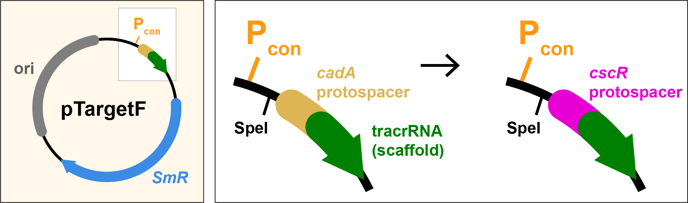
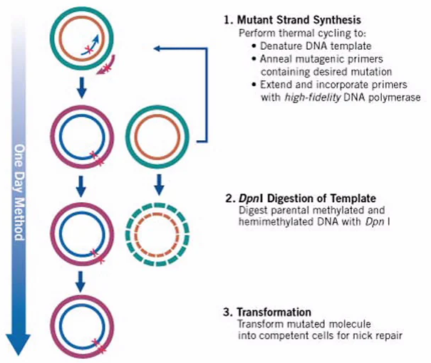

Site-Directed Mutagenesis¶
Site-directed mutagenesis refers to any cloning technique where you introduce a specific, localized change into a DNA sequence. These changes may include:
- Substituting a base or codon
- Inserting or deleting a small sequence (typically <30 bp)
- Replacing a defined region
- Creating a variant library at a defined site
In all cases, you're targeting a specific location within a plasmid and rewriting a short region while leaving the rest unchanged.

Figure: Site-directed mutagenesis of the pTargetF plasmid to retarget the gRNA. The original cadA-targeting protospacer (orange) is replaced with a new cscR-targeting protospacer (pink), using a SpeI-flanked region upstream of the gRNA scaffold (green tracrRNA).
Overview of Mutagenesis Strategies¶
Most mutagenesis methods resemble the PCR-based cloning techniques you've already seen. The general pattern is:
- PCR the entire plasmid using primers that encode your intended mutations.
- Re-close the product using ligation or Gibson-like mechanisms.
- Transform and screen for correct clones.
Conceptually, it's like the limiting case of assembly: just one fragment, but edited.
1) EIPCR (Enzymatic Inverse PCR)¶
EIPCR is analogous to the NcoI/XhoI method you used in basic cloning, except it uses a single restriction site flanking the mutation site to reclose the plasmid.
This method is ideal when the mutation you want to introduce is close to a unique restriction site. You perform a full-vector PCR using primers that flank the site and introduce the desired edits. After PCR, you digest the product with the enzyme and ligate the linear fragment to restore circularity.
Example: Retargeting the protospacer in pTargetF¶
In the Basic Cloning tutorial, you cloned the Cas9 gene from Streptococcus pyogenes into an expression vector. Cas9 is the "scissors" protein that creates double-strand breaks at specific locations in DNA, but it requires a guide RNA (gRNA) to find its target. The gRNA consists of two parts: a customizable 20 bp protospacer sequence that matches the genomic target, and a constant scaffold that helps recruit Cas9. Together, the Cas9 protein and the gRNA form a complex that scans DNA, binds to sequences matching the protospacer, and cuts them if an adjacent "NGG" protospacer-adjacent motif (PAM) is present.
To design a new protospacer, you need to identify a 20 bp sequence in your target gene that is directly upstream of an NGG motif—the PAM site required by Cas9. In practice, you scan for "GG" on the 3′ end of the desired target, then take the 20 bp sequence immediately upstream. For example, if "GG" starts at position 101, the protospacer would be positions 80 to 99. You can think of this computationally as finding the index of "GG" and extracting the −21 to −1 substring. Any sequence that satisfies this rule can be targeted for cleavage by Cas9. To create a new gRNA, simply replace the 20 bp protospacer sequence in pTargetF and coexpress with Cas9.
The pTargetF plasmid expresses guide RNAs (gRNAs) for CRISPR/Cas9, combining a customizable 20 bp protospacer (which determines target specificity) with a constant scaffold region. To retarget Cas9 to a new genomic site, you simply replace the protospacer. Conveniently, pTargetF includes a SpeI site upstream of the protospacer, allowing efficient editing via EIPCR: PCR amplify the plasmid with primers encoding the new protospacer, digest with SpeI, and re-ligate to form the edited plasmid.
Primer Design and Strategy¶
The first step is to model your edited sequence. We want to replace the original cadA-targeting protospacer in pTargetF with a new protospacer targeting the cscR gene.
Below is a portion of the cscR sequence with all potential PAM sites (NGG) highlighted. Any 20 bp sequence immediately upstream of a GG can serve as a candidate protospacer. Specialized software tools can help you pick optimal guides based on efficiency and off-target predictions, and in many cases, validated guides are available in public databases.
Once you select your new protospacer, you replace the original cadA-targeting protospacer in pTargetF.
Below, we show the pTargetF sequence before and after the change. We also select forward and reverse anneal sequences flanking the site of modification.
Original (targeting cadA)¶
With cscR replaced¶
Now that we’ve modeled the edited region, we can design primers to build it. The forward primer includes everything from the SpeI site through the end of the forward annealing region. The reverse primer is the reverse complement of the sequence from the start of the reverse anneal to the end of the SpeI site. Add a 5′ tail of 5 arbitrary bases to both primers to improve enzyme activity and allow for efficient restriction digestion.
Forward Primer (ol_protoF)
SpeI Protospacer Forward Anneal
5’-ccataACTAGTaacgcgtgaccgcgtattgcGTTTTAGAGCTAGAAATAGCAAG -3’
Reverse Primer (ol_protoR)
SpeI Reverse Anneal (rc)
5’-ctcagACTAGTattatacctaggactgagctag-3’
Finally, we can write up our construction file. As always, simulate your construction file to make sure it works before ordering oligos.
PCR ol_protoF ol_protoR pTargetF ipcr Digest ipcr SpeI speDig Ligate speDig pTarget-cscR
2) QuickChange Mutagenesis Using pET-INS¶
Example: C96S Mutation in Insulin¶
Cysteine 96 in human insulin helps form disulfide bonds critical for protein folding. Mutating this residue to serine (C96S) can stabilize recombinant insulin analogs by reducing misfolding or aggregation. In this example, we’ll use QuickChange mutagenesis to introduce the C96S mutation in the pET-INS plasmid.

Image adapted from Agilent Technologies.
Strategy¶
QuickChange uses two overlapping primers to introduce a mutation into a plasmid:
- The mutation sits in the middle of each primer.
- The flanking regions must perfectly match the template DNA.
- After high-fidelity PCR, the full plasmid is synthesized but with nicks.
- DpnI is used to digest the methylated parental (template) DNA.
- The nicked product is repaired inside E. coli after transformation.
Conceptually, this is like a Gibson assembly with one fragment, except ligation occurs in vivo.
Mutation Design¶
- Open
pET-INS.seqand locate amino acid 96 in the INS coding sequence. - Confirm it encodes Cysteine (TGC or TGT).
- Replace with a Serine codon, like AGC.
- Annotate the codon as
"C96S".
Primer Design¶
Choose ~20 bp of perfectly matched sequence flanking the mutation site for both directions. The mutation is centered in the oligos.
Oligos¶
Forward Primer (ol_C96S_F)
[anneal] [MUTATED CODON] [anneal]
5’-gaagcgtggcattgtggaacaaAGTtgtaccagcatctgctccctc-3’
Reverse Primer (ol_C96S_R)
Reverse complement of forward primer
5’-gagggagcagatgctggtacaACTttgttccacaatgccacgcttc-3’
Final Notes¶
- Perform DpnI digestion after PCR to eliminate the template plasmid.
- No ligase is required — the cell repairs the nicks.
- Very fast and easy to perform
- Ideal for single codon changes, but less robust than EIPCR for large insertions.
3) Saturation Mutagenesis¶
When you began the wetlab portion of the pP6 experiment, you used Golden Gate-style site-directed mutagenesis not to create a single edited clone, but an entire library of variants. This approach is called saturation mutagenesis.
Instead of targeting one mutation, saturation mutagenesis introduces degenerate bases—for example, "N" represents a mix of all four nucleotides (A, T, C, G). There are other codes like:
"K"= G or T"S"= G or C"W"= A or T
These are called IUPAC degeneracy codes.
Designing these oligos follows the same workflow as any Golden Gate mutagenesis:
- Build a model of the final product with degenerate bases included.
- Define junctions and annealing regions.
- Simulate and confirm construct logic.
⚠️ However, a few special rules apply for degenerate libraries:
- Do not place degeneracy at the 3′ end of your oligos (the annealing region). This can prevent proper PCR priming.
- Avoid degeneracy at the sticky ends or within the junctions of Golden Gate primers. They must be precise for the assembly to work.
- It's best to place degenerate bases a few nucleotides away from the junction to reduce any context-dependent ligation bias.
Example: pP6 Library Oligos¶
Here are the final oligos used for the pP6 linker library:
P6LibR2 CCAAAggtctcgTTATANNNNNNNNNNNNNNNNNTGTCAANNNNGAACCCAGGACTCCTCGAAGTC
P6LibF2 CAGTAggtctcgATAATNNNNNNANNNNGTTAGTATTTCTCCTCGTCTAC
These primers:
- Introduce degeneracy to encode a 4-amino-acid linker between domains
- Conform to Golden Gate primer rules (prefix, BsaI, sticky, anneal)
- Place degeneracy well away from the junctions for optimal ligation efficiency
You can simulate this library in C6-Tools to visualize possible sequence outcomes and confirm primer performance.
Mutagenesis Quiz: Build a T203X EGFP Variant Library¶
In this quiz, you'll introduce a rational point mutation into a fluorescent protein gene to change its properties in a visible and meaningful way.
Background¶
We're using pcDNA3-EGFP, a mammalian expression plasmid that produces Enhanced Green Fluorescent Protein (EGFP). This plasmid is commonly used for visualizing gene expression or localization in mammalian cells.
The plasmid contains:
- A CMV promoter for expression in mammalian cells.
- An Ampicillin resistance gene and ColE1 origin for propagation in E. coli.
- The EGFP gene, which encodes a protein that fluoresces green when expressed and excited with blue light.
In the lab, you'd build the plasmid in E. coli, purify plasmid DNA, and then transfect it into mammalian cells, where the protein is expressed and fluoresces.
Goal¶
A previous screen of a site-saturation mutagenesis library at position T203 found that the T203Y mutation (Emerald GFP) produced brighter and red-shifted fluorescence. But this mutation was discovered by making a degenerate library where all possible codons were tested.
In this quiz, you will build the same library — not just a single mutant — using Golden Gate mutagenesis. You'll introduce an NNK codon at position 203 of EGFP to allow all 20 amino acids (and one stop) to be sampled.
Tools¶
- 🧬 Genetic code table
- 📦 Benchling and ApE will translate sequences automatically — but you must start from the ATG of the ORF, not the start of the plasmid.
{kind=link}
Task¶
Use site-directed mutagenesis via Golden Gate assembly to mutate Threonine 203 to NNK in EGFP, generating a codon-randomized library at that site.
You will:
- Locate T203 in the EGFP ORF
- Replace its codon with
NNK - Design and annotate the product
- Simulate the construct and output a valid Construction File
Files¶
- You can find the plasmid here: Addgene #13031: pcDNA3-EGFP
- Click the "View all sequences" link on the Addgene plasmid page.
- Then click the GenBank download link.
- Open the downloaded
.gbkfile in ApE or Benchling to view the plasmid map and annotations. - A copy of the plasmid map is also available in the tutorial’s
assetsfolder as:addgene-plasmid-13031-sequence-305137.gbk.
⚠️ Important: The plasmid contains an internal BsaI site, which would interfere with assembly. To avoid this conflict, use BsmBI instead (recognition site: 5′–CGTCTC(N1/N5)–3′).
Guidelines¶
This quiz builds on everything you’ve learned so far. As you design your T203NNK library:
- Use Golden Gate mutagenesis with BsmBI on
pcDNA3-EGFP. - Replace only the codon for T203 with
NNK, preserving the reading frame. - As you prepare your product sequence in ApE or Benchling, annotate the edited codon as
"T203NNK"to keep track of your mutation site. - Choose a nearby 4 bp junction, the annealing regions, and design 2 Golden Gate oligos.
- Write up and simulate your construction file below.
- The simulator already has the sequence for pcDNA3-EGFP.